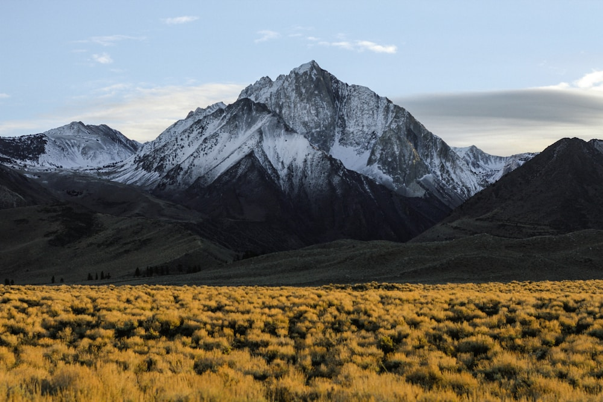

The base layer is the foundation of every mountaineering layering system. Worn directly against bare skin, it acts as the primary interface between human physiology and external environmental cold. In technical mountaineering circles, an ongoing debate persists: Natural 18.5-Micron Merino Wool vs. Synthetic Polypropylene/Polyester.
While synthetic fibers wick liquid sweat with rapid speed, they suffer from sudden post-exertion chill and harbor severe bacterial odor within days. In contrast, 18.5µm Ultra-Fine Merino Wool features a complex dual-layer cellular architecture: a hydrophobic waxy exterior that repels liquid water, and a hydrophilic keratin cortex that absorbs moisture vapor directly from the skin boundary layer. In this masterclass, we explore the fiber physics, moisture buffering, and thermal comfort of high-altitude base layers.
1. The Keratin Cortex: Absorbing Moisture Vapor Before It Condenses
How natural wool prevents wet skin chilling:
- Internal Vapor Buffering: Merino fibers can absorb up to 35% of their dry weight in moisture vapor into their internal cortical cells without feeling wet or clammy to the touch.
- Exothermic Heat of Sorption: As water vapor molecules bind to amino acid hydrogen sites inside the wool cortex, chemical bonding releases 960 joules of latent heat per gram of absorbed moisture, providing an active warming effect during early morning alpine starts.
- Hydrophobic Epicuticle Barrier: The outer surface of the fiber is coated in natural lanolin-rich fatty acids that repel droplets of liquid rain or condensation.
“Synthetic shirts only move liquid sweat after you are already wet. Merino wool absorbs moisture in its vapor state before it ever condenses on your skin.”
2. 18.5-Micron Fineness: Eliminating Wool Prickle
Why modern fine merino feels as soft as silk:
- The Human Itch Threshold: Coarse traditional wool fibers measure 25 to 35 microns; when pressed against skin, they do not bend, triggering pain receptors in the epidermis.
- 18.5µm Fiber Elasticity: Our ultra-fine Australian merino fibers are exceptionally thin and supple, bending effortlessly under less than 0.5 grams of pressure for zero-itch comfort.
- Circular Seamless Knitting: Base layers are knitted on circular machines to eliminate side seams, preventing irritation under heavy backpack hip belts.
3. Natural Bacterial Resistance and Multi-Week Expeditions
Why synthetic fabrics develop permanent odor:
Synthetic polyester fibers are lipophilic, absorbing fatty skin lipids that feed odor-causing bacteria (*Corynebacterium*). Merino wool contains natural antimicrobial proteins that trap bacteria and lock odor molecules within the fiber until laundering, allowing climbers to wear one base layer for three weeks straight on remote peaks without odor.
4. Base Layer Fiber Comparison Matrix in Mountaineering
| Base Layer Material | Moisture Vapor Absorption | Post-Exertion Chill Defense | Multi-Day Odor Immunity |
|---|---|---|---|
| 18.5µm Ultra-Fine Merino Wool (Alpine Layer Fox) | 35% (Vapor State Buffer) | ★★★★★ (Releases Sorption Heat) | ★★★★★ (21+ Days Odor Free) |
| Hydrophobic Polypropylene Synthetics | 0.4% (Liquid Only) | ★★☆☆☆ (High Evaporative Chill) | ★☆☆☆☆ (Severe Bacterial Stench in 24h) |
| Heavyweight Cotton Thermal Knit | 2700% (Liquid Sponge) | ★☆☆☆☆ (Dangerous Hypothermia Risk) | ★★☆☆☆ (Sours Quickly When Damp) |
5. Core-Spun Nylon Reinforcement for Tensile Durability
Pure wool can be fragile under extreme friction. Our 200g/m² base layer yarn wraps 18.5µm merino fibers around a microscopic central filament of Grade 6.6 nylon, boosting tear resistance by forty percent while keeping 100% merino against your skin.
6. Natural Flame Resistance on Glacial Stoves
Unlike synthetic polyester shirts that melt into molten plastic upon contact with a stray camp stove flare-up, merino wool is naturally flame-retardant (limiting oxygen index 25.2), forming a protective self-extinguishing char.
7. UPF 50+ Ultraviolet Radiation Protection at Altitude
At high altitudes, UV radiation increases by 10-12% for every 1,000 meters of elevation. The dense cellular structure of merino wool blocks 98% of harmful UV rays, protecting climbers on reflective snow glaciers.
8. The Supreme Second Skin of High-Altitude Climbing
By engineering base layers from 18.5-micron merino wool, Alpine Layer Fox provides climbers with a resilient, odorless, and thermally intelligent foundation for extreme alpine ascents.
9. Elastic Recovery and Creep Resistance in 200g/m² Weaves
Natural helical polypeptide chains in merino give our fabric 30% elastic recovery, ensuring the base layer hugs the body closely without sagging around elbows or waistbands after continuous climbing.
10. Thumb Loops and Extended Drop-Tail Lumbar Coverage
Our base layer tops feature integrated low-profile thumb loops to prevent sleeves from riding up under mid-layers, and an extended drop-tail hem that stays tucked securely into climbing harness leg loops.
11. An Eternal Covenant of Natural Merino Excellence
At Alpine Layer Fox, our mastery of 18.5µm merino wool base layers proves that nature's finest performance fiber remains unmatched by any synthetic plastic alternative.
12. Elastic Recovery and Creep Resistance in 200g/m² Weaves
Natural helical polypeptide chains in merino give our fabric 30% elastic recovery, ensuring the base layer hugs the body closely without sagging around elbows or waistbands after continuous climbing.
13. Thumb Loops and Extended Drop-Tail Lumbar Coverage
Our base layer tops feature integrated low-profile thumb loops to prevent sleeves from riding up under mid-layers, and an extended drop-tail hem that stays tucked securely into climbing harness leg loops.
14. The Radiant Tactile Comfort of Next-to-Skin Merino
Slipping into an 18.5µm merino base layer before an alpine ascent is an incomparable physical luxury, providing a silky, itch-free moisture shield that breathes with your body in extreme sub-zero cold.
15. The Master Blueprint for High-Altitude Base Layers
At Alpine Layer Fox, our scientific understanding of keratin moisture buffering and exothermic sorption honors mountaineering physiology, delivering base layers of peerless comfort and performance.
16. Seamless Circular Knit Torso Tube Construction
By knitting the entire torso on computerized circular machines, we eliminate abrasive longitudinal side seams that rub against climbing harness waistbelts during multi-pitch ice ascents.
17. An Eternal Covenant of Natural Merino Excellence
By choosing ultra-fine 18.5-micron Australian merino over synthetic plastics, Alpine Layer Fox ensures that climbers remain warm, dry, and odor-free across weeks of demanding mountain exploration.
18. Dynamic Latent Heat Sorption Kinetics at Sub-Zero Temperatures
When moisture vapor is absorbed into the amorphous keratin zones, latent heat of sorption is gently released, keeping the climber cozy during chilly early morning starts while preventing sweat accumulation during intense ridge climbing.
19. Archival Preservation of Custom Sized Merino Base Layers
To maintain the pristine elasticity of your bespoke merino base layer, always store garments horizontally folded inside breathable organic cotton cases rather than hanging on wire hangers that stretch the shoulder loops.
20. The Sovereign Standard of Natural Base Layer Performance
By taking time to nurture your merino wool with gentle pH-neutral cleansers, you ensure that this exquisite piece of technical apparel will continue to provide cloud-like warmth and odor resistance for years to come.
Frequently Asked Questions on Merino Base Layers

Dr. Anna Lindqvist
Director of Biomaterials at Alpine Layer Fox. Anna researches protein fiber morphology and moisture vapor dynamics for expedition gear in Manhattan.